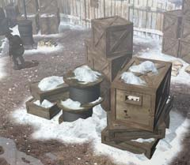

| 概要 | 地図 |
| 淡いヒント集 | ヒント集 | 的確なヒント集 |
| 攻略最短ルート |
| 場所選択に戻る |
ロマンスバーグ(前半)
兄弟の家
 ・何とか中に入れても、問題はある。 ・彼らに見つかってはならない。 ・彼らに見つからないようにするには、どうしたらよいか?
マルカ

・サーコス同様、下の地区について詳しい。 ・何か分からないことがあったら、聞くとよい。 ・サーコスが知らないことも知っている場合があるのだ。
病気のハンス

・まずは看病できそうな人間を探す必要がある。 ・誰かに相談しなくてはならない。 ・どこで、どうやって、誰が看病してくれるか。そして、看病するための条件は? ・間違ってもオスカーを頼りにしてはならない。
雪山にある装置

・これは何をするものか? ・レバーと何かを入れる穴がある。 ・中には何が入っているのか? また、何に使えばよいか? |
| 場所選択に戻る |
| 概要 | 地図 |
| 淡いヒント集 | ヒント集 | 的確なヒント集 |
| 攻略最短ルート |
Syberia II
| 目次へ戻る | ページの上部へ |